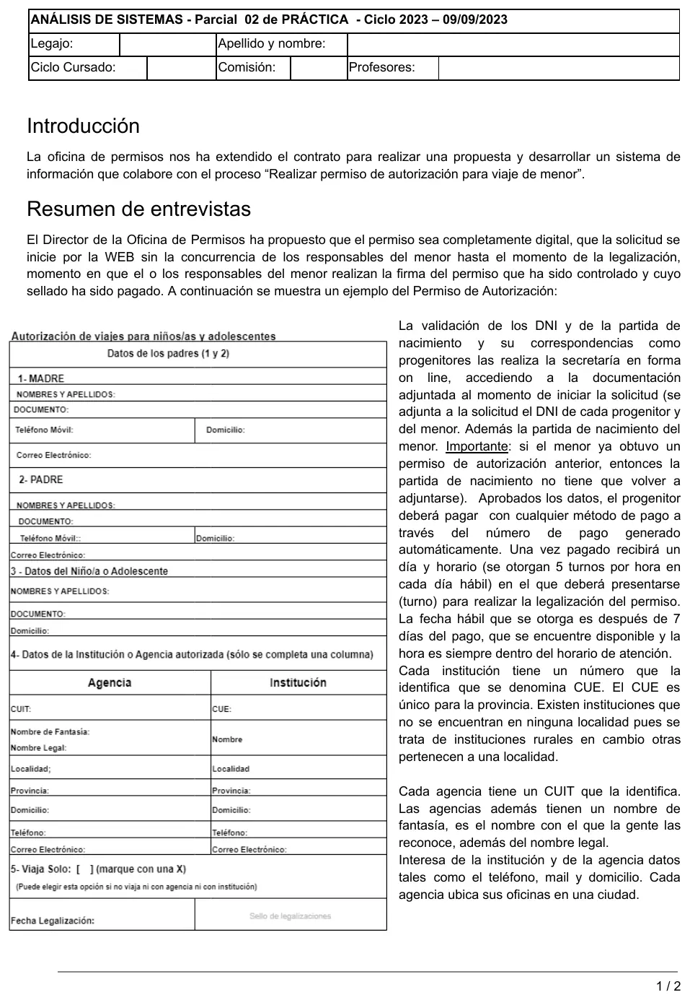
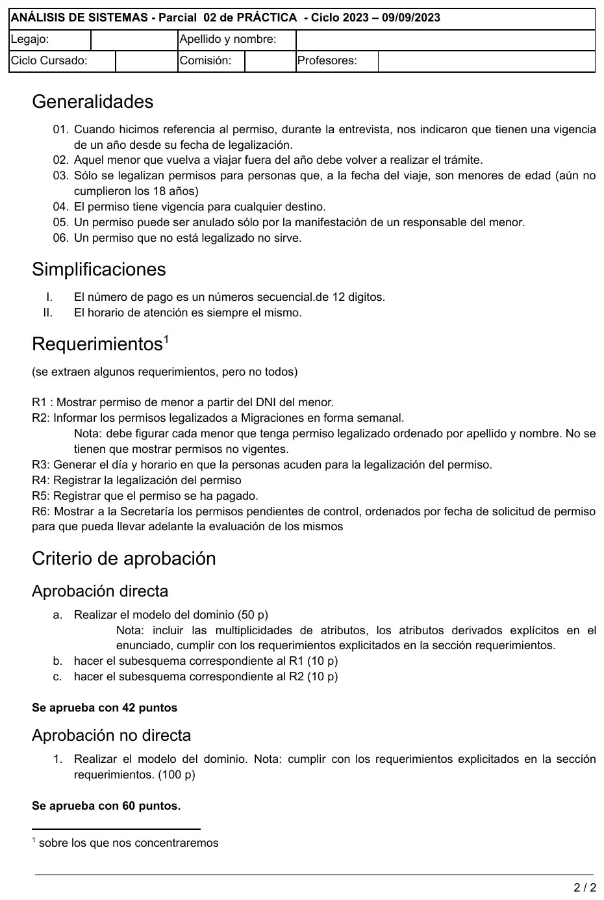

2° parcial, 09/09/2023. Permisos de viaje
2° parcial, 09/09/2023
Enunciado




Propuesta de respuesta
Respuesta no verificada. La propuso Luta Studios con inteligencia artificial y ningún docente la revisó. Puede tener errores.
a) Modelo del dominio
Las multiplicidades de atributo marcan lo que todavía no existe al iniciar la solicitud. El único derivado explícito es el vencimiento, un año desde la legalización (generalidad 01). Apellidos y nombres van separados porque el R2 pide ordenar por apellido y nombre. Tocá el dibujo para verlo en pantalla completa.
Cómo cumple cada requerimiento.
| Requerimiento | Lo que lo sostiene en el modelo |
|---|---|
| R1 Mostrar permiso a partir del DNI del menor | Menor.documento y la asociación con Permiso |
| R2 Informar permisos legalizados a Migraciones | fechaLegalizacion, /fechaVencimiento y los datos del Menor |
| R3 Generar día y horario | Permiso.turno (5 por hora en días hábiles, después de 7 días del pago) |
| R4 Registrar la legalización | Permiso.fechaLegalizacion y estado |
| R5 Registrar el pago | Permiso.nroPago y fechaPago |
| R6 Mostrar pendientes de control | Permiso.estado y fechaSolicitud para ordenar |
La partida de nacimiento queda en Menor y no en Permiso, porque si el menor ya tuvo un permiso no se vuelve a adjuntar.
b) Subesquema del R1
FE solicitudPermiso = documentoMenor
FS permisoMenor = [apellidos + nombres + documento + domicilio + 1{responsable(e)}2 + [agencia(e) | institucion(e) | viajaSolo] + fechaLegalizacion + /fechaVencimiento | msgNoHayPermisoVigente]
responsable = apellidos + nombres + documento + telefonoMovil + domicilio + correoElectronico
agencia = cuit + nombreFantasia + nombreLegal + domicilio + localidad + provincia + telefono + correoElectronico
institucion = cue + nombre + domicilio + (localidad + provincia) + telefono + correoElectronicoc) Subesquema del R2
FE solicitudInforme = fechaInforme *se dispara una vez por semana*
FS informeMigraciones = fechaInforme + [1{apellidos + nombres + documento + fechaLegalizacion + /fechaVencimiento}n | msgNoHayPermisos] *ordenado por apellidos y nombres*El orden por apellido y nombre no lo muestra el subesquema. Lo hace el sistema con los atributos que recupera.
Respuesta no verificada. Puede tener errores.
Se armó con la página del 2° parcial (modelo del dominio, multiplicidad de atributos, atributo derivado y subesquema de navegación). La forma sigue el modelo del dominio y el subesquema de la resolución del recuperatorio del 19/02/24, del mismo ciclo 2023.
Quedó en duda: El R1 no dice qué permiso mostrar si el menor tuvo varios: se tomó el legalizado y vigente. El estado del permiso podría reemplazarse por las fechas, que ya dicen en qué paso está. Que la imagen del DNI quede en Responsable y Menor, y no en cada permiso, es una decisión de modelado. La notación del diccionario sale de un resumen de alumno, porque no hay apunte de cátedra de diccionario de datos.
¿Cómo te fue?
Marcá cada tema del examen.
- Modelo del dominioModelo del dominio, en 2° parcial
- Subesquema de navegaciónSubesquema de navegación, en 2° parcial